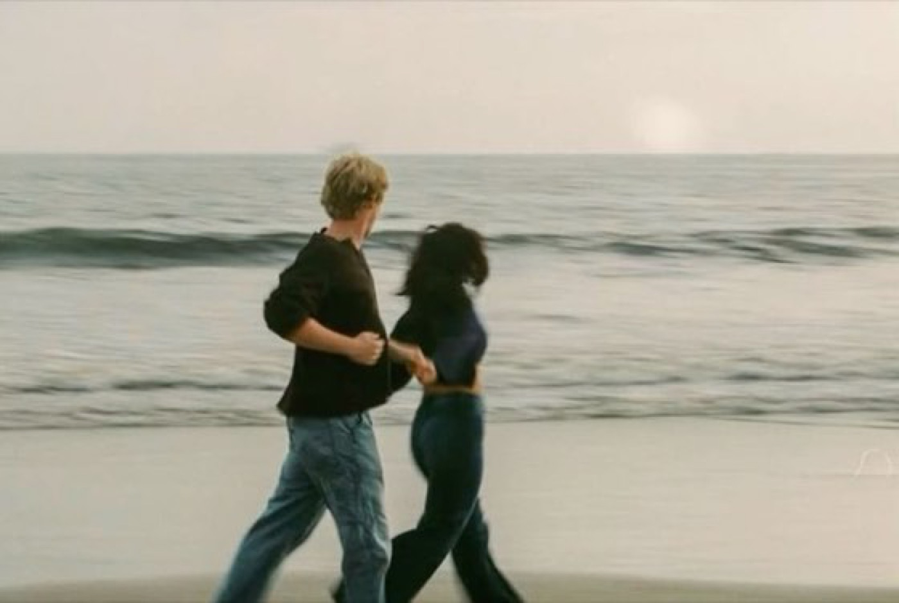
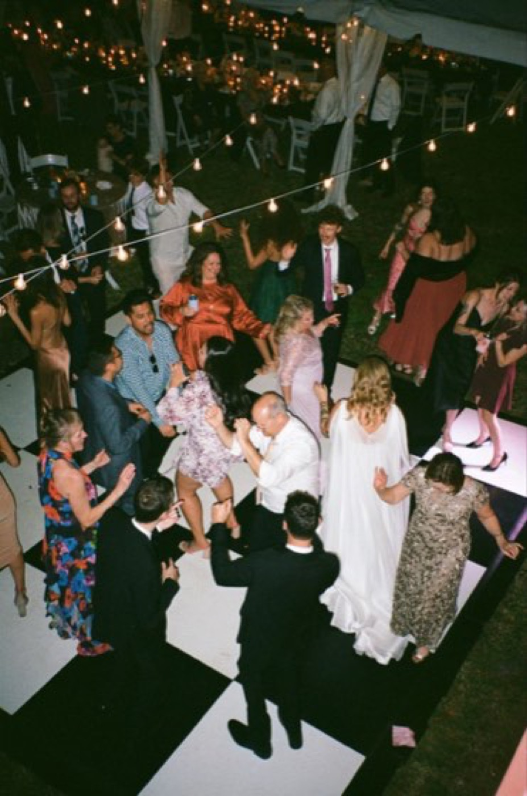
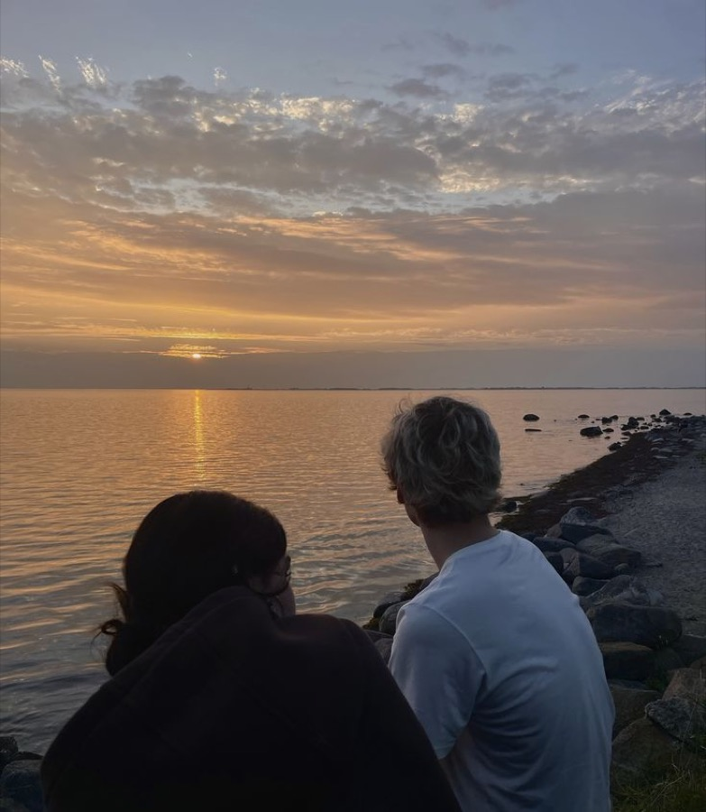

Best Disposable Camera Apps for Weddings in 2026
Filmsera, Once, POV, Scene, Dazz — what actually matters for a wedding Film: Looks, Reveal, guest join, and Recap.
Read the story →Stories on the Looks, the wait, and the craft of capturing a night the way it actually felt — from the team behind Filmsera.



Filmsera, Once, POV, Scene, Dazz — what actually matters for a wedding Film: Looks, Reveal, guest join, and Recap.
Read the story →
Party flash, dance-floor grit, or soft home-movie grain — match the Look to the night before you Host the Film.
Read the story →
Create the Film, pick a Look, print the join code, and let Guests fill the roll until Reveal.
Read the story →
A digital sensor records light perfectly. Film never did — and that imperfection is exactly what your eye reads as warmth, depth, and memory.
Read the story →
Halation is the red bloom around a bright window. Grain is silver clumping in the dark. Here's where each one comes from — and how to use them on purpose.
Read the story →When you can review every frame, you stop being present. Removing the screen isn't a gimmick — it gives the evening back to the people in it.
Read the story →
The photographer gets the aisle. Your friends get everything else — the back-table laughter, the dance-floor chaos. A shared film gathers it all into one roll.
Read the story →
Name it, pick a look, set the reveal, share one link. A walkthrough of every choice the setup screen asks you to make — and the ones worth slowing down for.
Read the story →Disposable for a party, Super 8 for golden hour, instant for portraits. A practical map of the looks, grouped by the moment they were built to flatter.
Read the story →
A Recap isn't a slideshow of everything — it's an edit. How to choose the frames, pick a pace, and let a roll become something people actually rewatch.
Read the story →
Three hundred unsorted photos, compressed by the group chat, half of them screenshots. Here's why the usual methods fail and what to do instead.
Read the story →
Disposables were supposed to be a relic. Instead they're back at weddings, festivals, and dinner tables — and not only for the look.
Read the story →Golden hour flatters skin and casts long shadows. Blue hour turns a city electric. A practical guide to reading — and using — the light at the edges of the day.
Read the story →
Reveal too soon and it's just a camera. Reveal too late and the moment cools. How to match the wait to the occasion, from a house party to a honeymoon.
Read the story →
It isn't nostalgia for them — it's novelty. A look at why the most digital generation ever went looking for friction, limits, and the wait.
Read the story →
The shared disposable is the easiest party game you'll ever run and the one people talk about for weeks. Here's how to set it up so it actually lands.
Read the story →There's a reason a developed roll hits harder than a camera roll. A short tour through what waiting does to attention, dopamine, and the way we hold a moment.
Read the story →
Who can see your film, what happens before the reveal, and why your photos aren't training anything. The plain-language version of how we handle your roll.
Read the story →Why Portra whispers and Velvia shouts. How shadows, highlights, and skin tones reveal a stock's character — and how to pick the one that fits your scene.
Read the story →
The best trip photos are the ones your friends took of you. A shared film turns six fractured camera rolls into one story you all actually keep.
Read the story →You only ever see a moment from where you stood. A shared roll hands you the angles you missed — including the ones you're in.
Read the story →
Fujifilm called it the Utsurun-Desu — 'it takes pictures.' Forty years later the disposable is a wedding fixture and a TikTok genre. The story of how.
Read the story →A shared film is better with a small constraint. Ten prompts — from 'someone's hands' to 'the last song' — that turn a random roll into a collection.
Read the story →When every shot is free, none of them matter. Capping the roll forces the one decision that actually improves a photo: whether to take it at all.
Read the story →
A good film invitation sets the tone before anyone takes a photo. What to say, what to leave a mystery, and why the countdown does half the work.
Read the story →
The instant preview was a miracle that quietly cost us something: the shoebox, the surprise, the single frame you couldn't redo. An honest accounting.
Read the story →
Digital didn't kill film and film won't kill digital. They answer different questions. A clear-eyed look at what each is genuinely better at.
Read the story →The reveal shouldn't be the end of the roll. A practical guide to prints, sizes, paper, and the small ritual of putting a night on paper.
Read the story →24 Looks. Shared Films. Timed Reveal. Host the night — then open every Frame together.
Download on the App Store